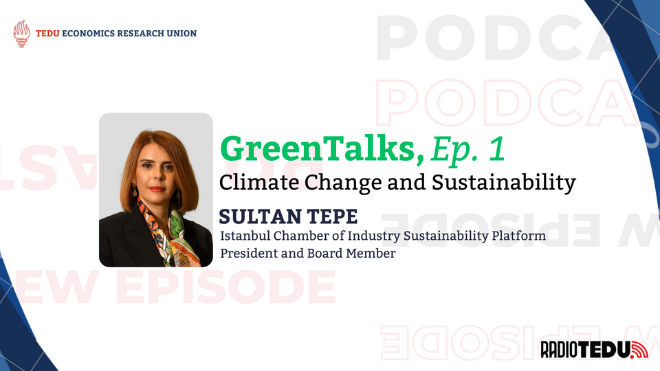
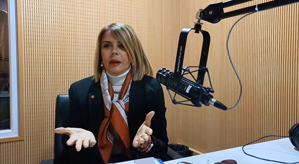
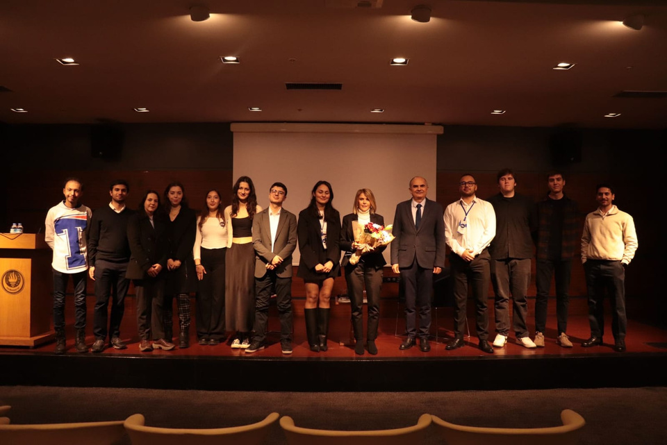

Sultan Tepe, board member and Head of Platform of Sustainability at Istanbul Chamber of Industry, was the guest of GreenTalks, a RadioTEDU podcast prepared in collaboration with TEDU Economics Research Union. Podcast hosts Ezgi Eylem Erdoğan and Arda Akgül explored sustainability, its reflection in industry, and how it can be applied across sectors in Türkiye.

Understanding Climate Change and Sustainability
What do you define as climate change?
Ms. Tepe defined climate change as a change in the environment, atmosphere, weather events, and where we live. However, she emphasized that the climate change we are currently experiencing is not natural—it has been caused by humans, which began with the Industrial Revolution and its resulting greenhouse effect. "It is harmful to the World which is caused by complex industry," she noted.
Sustainability is about meeting current needs without compromising future generations' needs. — Sultan Tepe
Ms. Tepe also explained that sustainability, as a concept, is about 60 years old—a term offered by scientists to the United Nations as they questioned the state of the world. When applied to Türkiye specifically, the definition of sustainability becomes "producing for the World without consuming the World."
What are the major global impacts we should expect?
According to Ms. Tepe, climate change will be a significant problem, and COP conferences hold high importance for the world's future. She highlighted that climate change will cause migration and affect around 45 countries that have not caused the problem but will be severely impacted as ice caps melt at both poles due to the Industrial Revolution and its consequences.
Ms. Tepe pointed out that it is not possible to keep global temperature rise at 3°C—we have already reached 1.5°C. This warming can cause drought, hunger, and epidemics as microorganisms are released from melted ice caps. The urgency is clear: we must act now to prevent further escalation.

The Industrial Revolution and Collective Responsibility
How do you view the role of industrialization in this crisis?
Ms. Tepe stated that the Industrial Revolution is not inherently a bad thing—it has leveraged the welfare level of humanity significantly. However, the danger that was brought by the resulting climate change has not been fully realized by society. "Most probably, your children will be living the consequences of climate change," she warned. "We all have to be aware of the problem and take measures."
The European Green Deal and Global Trade
What is the significance of the European Green Deal?
Discussing the European Green Deal, Ms. Tepe explained that this initiative mandates carbon neutrality for all products sold in Europe—a shift that has global implications. Industries worldwide, including those in Türkiye, are now under pressure to adopt greener practices. "To bring carbon neutralization to the European Union, it is needed to make imported products carbon-neutral too," she said, highlighting how these regulations reshape global trade and production standards.


A Call for Innovation and Change
Through her insights, Ms. Tepe highlighted that addressing climate change requires not only technological innovation but also a deep shift in societal attitudes. It is an urgent call for everyone to commit to a more sustainable future. Ms. Tepe's insights serve as a powerful reminder of the urgent need for both technological innovation and a fundamental shift in our societal mindset.
As industries and governments strive to achieve a sustainable future, Ms. Tepe's message calls out that combating climate change is not solely a policy challenge but a call for personal and collective responsibility. Embracing sustainability, both in theory and in practice, is essential to protect our planet and ensure a good future for future generations.
TED University Economics Research Union thanks Sultan Tepe for her insights and participation in this interview. Subscribe to the TEDU ERU YouTube Channel for new episodes of GreenTalks and other content.